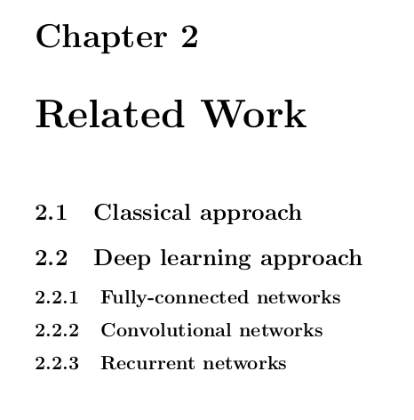
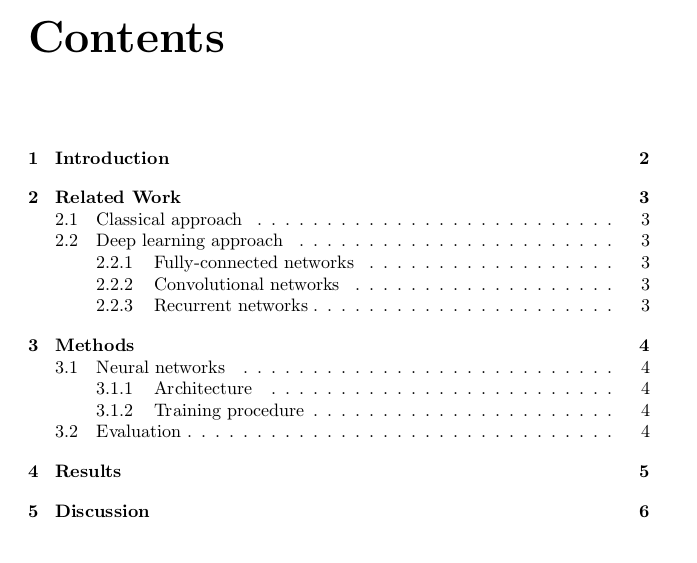
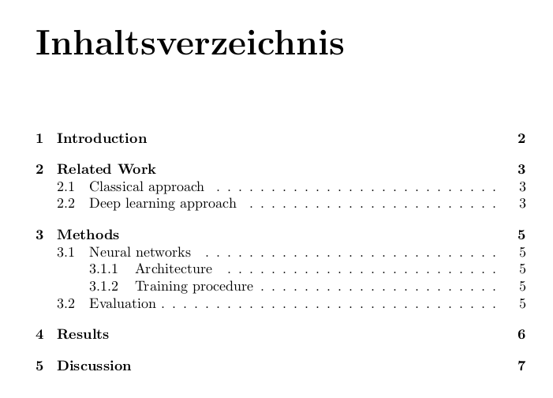

Introduction to LaTeX and Beamer
![]()
1 - Introduction to LaTeX
Introduction
LaTeX is a document preparation system for high-quality typesetting.
It is most often used for medium-to-large technical or scientific documents but it can be used for almost any form of publishing.
Typesetting journal articles, technical reports, books, and slide presentations.
Control over large documents containing sectioning, cross-references, tables and figures.
Typesetting of complex mathematical formulas.
Advanced typesetting of mathematics with AMS-LaTeX.
Automatic generation of bibliographies and indexes.
Multi-lingual typesetting.
Inclusion of artwork, and process or spot colour.
Using PostScript or Metafont fonts.
Installation
On Linux, the easiest way is to install the
texlivepackage (oftentexlive-fullto obtain all dependencies).On MacOS, you can also install
texliveif you havebrewinstalled, or useMacTeXhttp://www.tug.org/mactex.On Windows, the
MikTexdistribution https://miktex.org is the best way to go.
After installation, all you need is a text editor to create .tex files and compile them with pdflatex:
However, a good IDE may save you a lot of time: LyX, Kyle, TeXStudio, TeXMaker, etc.
You can also use web-services in the cloud, such as https://overleaf.com or https://overleaf.hrz.tu-chemnitz.de/.
Resources
LaTeX exists since the early 80’s and is quite stable, so the internet is full of information.
https://www.latex-project.org : the official page.
https://en.wikibooks.org/wiki/LaTeX : a complete free book.
https://tex.stackexchange.com/: stackoverflow-like for LaTeX, every possible question has already been asked.
https://www.overleaf.com/learn: overleaf has a great tutorial.
Cheat sheet: https://wch.github.io/latexsheet
% Preamble starts with document type
\documentclass[a4paper,11pt]{article}
% Import packages
\usepackage{blindtext}
% Information
\title{Title of the report}
\author{Author Name}
\date{\today}
% Start the document
\begin{document}
% Title page is automatically generated
\maketitle
% Content of the document
\Blindtext
% Finish the document
\end{document}Structure of the document
A TeX document always starts with the documentclass:
The possible documents types include:
letter: for single-page documents.article: compact, multipages documents (scientific papers).report: extended multipages documents, organized in chapters (reports, Bachelor/Master/PhD thesis).book: for complete books.memoir: based on the book class, but you can create any kind of document with it.beamer: for slides.
More specialized templates can be provided in a .cls file.
Arguments between square brackets define the paper size, font size, number of columns, etc.
Document class options
10pt, 11pt, 12pt: Sets the size of the main font in the document. If no option is specified, 10pt is assumed.a4paper, letterpaper: Defines the paper size.titlepage, notitlepage: Specifies whether a new page should be started after the document title or not.twocolumn: Instructs LaTeX to typeset the document in two columns instead of one.twoside, oneside: Specifies whether double or single sided output should be generated.landscape: Changes the layout of the document to print in landscape mode.
Preamble
Between the document class and \begin{document} is the preamble.
You can import packages there where you can tune the appearance of your document.
For example, if you use non-ASCII characters (ß, ü…), you may need to tell LaTeX to use the UTF-8 encoding:
You can also change the font if you do not like the default Computer Modern:
Basic formatting
- You can use bold, emphasized (or italic) and
typewriterfont faces:
You can use \textbf{bold}, \emph{emphasized} (or \textit{italic})
and \texttt{typewriter} font faces.- Paragraphs are separated by a blank line.
\\represents a line break.
Font size
- You can locally change the size of the font with the following commands (increasing sizes):
- For example, this word will be huge.
- The commands can apply to whole sections of the text, delimited by curly braces.
Line spacing
The default line spacing is single, which looks too “compressed” for reports.
A better value is the one-and-a-half line spacing. It simply has to be declared in the preamble:
Margins
- The default margins of a LaTeX document are too wide. You can import the
geometrypackage to reduce them:
- You can also provide a value (here one inch) to control them:
- or even control the top/left/right/bottom margins individually:
Text alignment
By default, paragraphs are justified (which is good), with automatic hyphenation of long words.
If you need to center or left-align some text, you can use environments (but no hyphenation):
Structuring a document
A LaTeX document can of course be structured into chapters, sections and subsections (or even deeper).
It depends on the document class: letters have nothing, articles and beamer slides do not have chapters, reports, books and memoirs do.
\chapter{Introduction}
\chapter{Related Work}
\section{Classical approach}
\section{Deep learning approach}
\subsection{Convolutional networks}
\subsection{Recurrent networks}
\chapter{Methods}
\section{Neural networks}
\subsection{Architecture}
\subsection{Training procedure}
\section{Evaluation}
\chapter{Results}
\chapter{Discussion}Structuring a document
- Each part will automatically get a number according to its position in the hierarchy.

Structuring a document
- If you do not want to give a number to the section, add a
*:
\chapter{Introduction}
\chapter{Related Work}
\section{Classical approach}
\section{Deep learning approach}
\subsection*{Fully-connected networks}
\subsection*{Convolutional networks}
\subsection*{Recurrent networks}
\chapter{Methods}
\section{Neural networks}
\subsection{Architecture}
\subsection{Training procedure}
\section{Evaluation}
\chapter{Results}
\chapter{Discussion}Table of contents
- You can automatically obtain the table of contents by specifying right after the title page:

Labels and references
- You can reference a section in the text by using
\refand\label:
\chapter{Introduction}
As we will see in section \ref{sec:training}, we...
...
\chapter{Methods}
\section{Neural networks}
\subsection{Architecture}
\subsection{Training procedure}
\label{sec:training}
\section{Evaluation}
...As we will see in section 3.1.2, we…
Labels have to unique. They correspond to the current level in the hierarchy.
Note: You will have to compile the source twice to get the right references.
Language
You will have noticed that words such as “Chapter”, “Contents” and so on, are written in English.
If you write in German, make sure you import the
babelpackage and configure it to German:

Figures and images
- Images (png, pdf, jpg) can be included in figures:
\usepackage{graphicx}
...
\begin{figure}[htbp]
\centering
\includegraphics[width=0.6\textwidth]{img/tuc.png}
\caption{TU Chemnitz.}
\label{fig:tuc}
\end{figure}- You can specify its width (relative to the page width or absolute in mm/in), its height, its orientation and so on.
[htbp]means here or top or bottom or page, in that order.- The caption will be automatically numbered.
- If you add a label to the caption, you can cite the figure with
\ref:
Lists and enumerations
- Lists are possible with the
itemizeenvironment. - Enumerations with the
enumerateenvironment. Numbers are generated automatically. - They can be nested.
Mathematical equations
- The main strength of LaTeX w.r.t Office is the possibility to produce nice equations:
\begin{equation} \nabla_\theta \mathcal{J}(\theta) = \mathbb{E}_{\pi_\theta}[\nabla_\theta \log \pi_\theta(s, a) Q^{\pi_\theta}(s, a)] \end{equation}
\usepackage{amssymb,amsmath}
...
\begin{equation} \label{eq:continuouspolicyloss}
\nabla_\theta \mathcal{J}(\theta) = \mathbb{E}_{\pi_\theta}
[\nabla_\theta \log \pi_\theta(s, a) Q^{\pi_\theta}(s, a)]
\end{equation}- Math symbols \nabla_\theta \mathcal{J}(\theta) can also be used inline:
Mathematical equations
- Equations can be numbered, aligned, etc…
\begin{align} \nabla_{\theta} J(\theta) & \approx \mathbb{E}_{\pi_\theta} [\nabla_{\theta} Q(s,a|\theta)|_{s=s_t,a=\mu_\theta (s_t)}] \nonumber\\ & = \mathbb{E}_{\pi_\theta}[\nabla_{a} Q^{\pi_\theta}(s, a)|_{s=s_t,a=\mu_\theta(s_t)} \times \nabla_{\theta}\mu_\theta(s)|_{s=s_t}] \end{align}
\begin{align} \label{eq:deterministicgradient}
\nabla_{\theta} J(\theta)
& \approx \mathbb{E}_{\pi_\theta}
[\nabla_{\theta} Q(s,a|\theta)|_{s=s_t,a=\mu_\theta (s_t)}]
\nonumber\\
& = \mathbb{E}_{\pi_\theta}[\nabla_{a}
Q^{\pi_\theta}(s, a)|_{s=s_t,a=\mu_\theta(s_t)}
\times \nabla_{\theta}\mu_\theta(s)|_{s=s_t}]
\end{align}Mathematical equations
- Complete guide to amsmath:
http://www.tug.org/teTeX/tetex-texmfdist/doc/latex/amsmath/amsldoc.pdf
- Short math guide:
ftp://ftp.ams.org/ams/doc/amsmath/short-math-guide.pdf
- Symbols cheat sheet:
References
The other main advantage of LaTeX is the ability to cleanly manage references (Vitay and Hamker, 2014).
Vitay and Hamker (2014) showed that blabla…
The other main advantage of \LaTeX{} is the ability to
cleanly manage references \citep{Vitay2014}.
\cite{Vitay2014} showed that blabla...- There are two tools for that:
bibtexandbiblatex. Here we focus onbiblatexwith thenatbibpackage:
natbiballows you to use\citetfor inline citations Author (year), and\citepfor citation in parentheses (Author, year).
References
- The first thing is to create a
.bibfile (e.g.references.bib) for bib entries, such as:
@article{Vitay2014,
title = {Timing and expectation of reward: a neuro-computational
model of the afferents to the ventral tegmental area.},
author = {Vitay, Julien and Hamker, Fred H.},
journal = {Frontiers in Neurorobotics},
year = {2014},
volume = {8},
number = {4},
pages = {1--14},
}The first argument to
@articleis the key, which is what you will use inside\citeor\citepto refer to the journal article.There are different entry types:
article,book,inproceedings,inbook,phdthesis, etc., with different required fields.
References: article entry
References: book entry
References: conference proceedings
@inproceedings{Silver2014,
author = {Silver, D. and Lever, G. and Heess, N. and
Degris, T. and Wierstra, D. and Riedmiller, M.},
title = {{Deterministic Policy Gradient Algorithms}},
booktitle = {Proceedings of Machine Learning Research},
year = {2014},
editor = {Xing, Eric P and Jebara, Tony},
pages = {387--395},
publisher = {PMLR},
volume = {32},
address = {Beijing, China},
}References: compiling
- Once your bib file is created, you need to add at the end of your document:
This will add automatically a chapter (or section) with the list of references.
If you work offline, you should now call
biberon the generated.auxfile and recompile two times:
pdflatex main.tex # Compiles a first time to gather the \cite commands
biber main # Generates a .bbl file with the correct entries
pdflatex main.tex # Add the entries to the References section
pdflatex main.tex # Make sur the citations are correct- Alternatively, use
latexmk:
References: selecting a style
Different journals/disciplines have different requirement for the citation style:
- Chicago-style : (Weinstein 2009)
Weinstein, Joshua I. 2009. “The Market in Plato’s Republic.” Classical Philology 104:439–58.
- Harvard-style: (Maynard, 1999)
Maynard, W 1999 ‘Thoreau’s House at Walden’, Art Bulletin, 81, 2, pp. 303
- Numbered / Nature [13]
- Herron, B. J. et al. Efficient generation and mapping of recessive developmental mutations using ENU mutagenesis. Nat. Genet. 30, 185–189 (2002).
References: selecting a style
LaTeX hat tons of predefined styles which you can directly use:
numeric, alphabetic, authoryear, apa, nature, science, chicago-authordate…
https://www.overleaf.com/learn/latex/Biblatex_citation_styles
- You just need to define it in the preamble:
The style we recommend for the report is
apa(American Psychological Association)You can also download any of the
.cslfiles on this website and put them in the same directory:
References: managing entries
Typing entries by hand can be very exhausting.
There are many reference managers available to help you:
- Jabref http://www.jabref.org/
- Colwiz https://www.colwiz.com/
- KBibTex http://home.gna.org/kbibtex
- Mendeley http://www.mendeley.com/
- Zotero http://www.zotero.org/
- Readcube https://www.readcube.com/
Some are desktop applications, others are cloud-based services.
Most of them allow you to search the web for a reference and automatically import them in your
.bibfile with all the correct fields.Some (Mendeley/Zotero) even have a browser plugin to save references from a web page in one click.
LaTeX can do so much more
And much more: tables, algorithms, music sheets, posters, flyers…
A lot of non-standard packages can be downloaded from CTAN (Comprehensive TEX Archive Network):
2 - Beamer document class for presentations
The beamer document class
\documentclass[9pt]{beamer}
\title{Title of the presentation}
\author{Author Name}
\institute{TU Chemnitz}
\date{\today}
% Start the document
\begin{document}
% Title slide is automatically generated
\frame{\titlepage}
% Slides are frame environments
\begin{frame}{Introduction}
My first slide.
\end{frame}
\end{document}Making slides with beamer
The only difference with a normal LaTeX document is the
beamerdocument class, and the use offrameenvironments for each slide.For the slide content, just use normal LaTeX:
Two columns
It is often useful to have two columns on a slide (e.g. an image on the left and some bullet points on the right).
Beamer provides the
columnsenvironment for that:
\begin{columns}
\begin{column}{0.5\textwidth} % Left column is 50% of the slide
\begin{center}
\includegraphics[width=0.9\columnwidth]{image1.jpg}
\end{center}
\end{column}
\begin{column}{0.5\textwidth} % Right column
\begin{itemize}
\item First point.
\item Second point.
\end{itemize}
\end{column}
\end{columns}Overlay: Incremental revealing
Some people like suspense in their slides:Overlay: specifying the slide number
Some people like suspense in their slides:
\begin{enumerate}[A]
\item<2-5> \color<5>[rgb]{0,0,0.6} First I will talk about this.
\item<3-4> Then explain that.
\item<4-4> Finally conclude on this.
\end{enumerate}Some people like suspense in their slides:
Overlay: elements which can be controlled
\textbf<>{}controls when to bold text.\only<>{}controls when to reveal text, occupies NO space otherwise.\textit<>{}controls when to italicize text.\uncover<>{}controls when to reveal text, DOES occupy space otherwise.\color<>[]{}controls when to change color of text.\alt<>{}{}reveals first argument when specification is true, otherwise reveals second argument.\alert<>{}controls when to highlight text (default red).\item<>controls when an item is shown.
Beamer styles
- Beamer comes with plenty of styles (AnnHarbor, Madrid, etc.) and color themes which can be used directly:
https://hartwork.org/beamer-theme-matrix
The advantage of themes is that you can structure your slides into
\section,\subsection, etc., and the current section will be displayed in the header.The TU Chemnitz also has a corporate beamer style:
https://www.tu-chemnitz.de/uk/corporate_design/vorlagen/dokumente/latex/latex-beamer.zip
Structuring
\section{Intro to Beamer}
\subsection{About Beamer}
\subsection[Basic Structure]{Basic Structure}
\subsection{How to Compile}
\section{Overlaying Concepts}
\subsection{Specifications}
\subsection[Examples]{Examples: Lists, Graphics, Tables}
\section[Sparkle]{Adding that Sparkle}
\subsection{Sections}
\subsection{Themes}
\section*{References}You can force the table of contents to displayed at the beginning of each section with:
References
Proseminar Ausgewählte Themen der Künstlichen Intelligenz